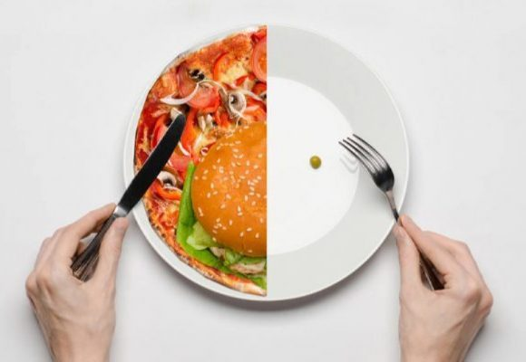

Existen varias descripciones que hacen alusión al ayuno practicado por hombres. Por ejemplo, en el siglo IV, los llamados padres del desierto eran hombres que se retiraban a los desiertos de Egipto y Palestina para entregarse al ayuno y a otras formas de penitencia. Por todo esto puede decirse que en muchas culturas y religiones el ayuno ha sido considerado como una purificación para protegerse del mal y entregarse a Dios. Existen varias descripciones, a partir de la Edad Media, donde se habla de mujeres y hombres entregados a la práctica del ayuno, sin embargo, lo que movía a la mayoría de estas personas para practicar una restricción alimentaria era de índole religiosa, lo que se conoce como “anorexia santa”. En esta las personas no presentaban las características de la anorexia nerviosa actual en la que la práctica del ayuno se encuentra en función de la belleza corporal.
Es en el siglo XVII cuando se empieza a hablar de anorexia nerviosa como de un hecho puramente médico. Alrededor del 85% de los pacientes con Trastornos de la Conducta Alimentaria (TCA) experimentan un intenso impulso para adelgazar, y en parte, su diagnóstico se confirma en función de la intensidad de dicho impulso (Ramacciotti et al., 2002). En 1874 William Gull describió en la Real Academia de Medicina londinense un curioso trastorno al que denominó anorexia nerviosa, presentando a una serie de pacientes a las que había tratado con éxito. Un mes después, en París, Charles Lasègue hacía lo propio bautizando el trastorno en cuestión como anorexia histérica, calificativo que ya empezaba a constituirse en la tradición francesa.
| Factores psicológicos: Las personas con trastornos alimentarios tienden a tener expectativas no realistas de ellos mismos y de las demás personas. A pesar de ser exitosos se sienten incapaces, ineptos, defectuosos, etc. No tienen sentido de identidad. Por eso tratan de tomar control de su vida y muchas veces se enfocan en la apariencia física para obtener ese control. | Síntoma:Actitudes obsesivas respecto a las dietas: estos regímenes se hacen de forma compulsiva, es decir que la persona sabe que es algo dañino para su salud, pero no puede dejar de hacer dieta. | Factores sociales: Los medios de comunicación asocian lo bueno con la belleza física (según cánones actuales) y lo malo con la imperfección física. Las personas populares, exitosas, inteligentes, admiradas, son personas con el cuerpo "perfecto", lo bello. Las personas que no son "delgadas y atractivas" son asociadas con el fracaso.. | |
| Factores biológicos: Hay estudios que indican que niveles anormales de determinados componentes químicos en el cerebro (neurotransmisores) predisponen a algunas personas a sufrir estreñimiento, perfecciones, pensamientos y comportamientos obsesivos y compulsivos. Estas personas son más vulnerables a sufrir un trastorno de la conducta alimentaria. | Síntoma:Contar las calorías de los alimentos que se ingieren y pesarse con frecuencia. | Síntoma:Encerrarse en el baño después de comer, sin que haya una causa que lo justifique. | |
| Factores familiares: Personas con familias sobre-protectoras o disfuncionales inflexibles e ineficaces para resolver problemas tienden a desarrollar estos trastornos. Muchas veces no muestran sus sentimientos y tienen grandes expectativas de éxito. Los niños aprenden a ocultar sus sentimientos, desarrollan miedo, inseguridad, dudas, etc., y toman el control por medio del peso y la comida. | Síntoma:Disminución importante del peso. | Síntoma:Cambios en el carácter relacionados con el haber comido o no. | Síntoma:Verse "gordo" aunque haya una disminución importante de peso. |
| Síntoma:Sentir nerviosismo al estar con personas o cerca de comida. | Síntoma:Comer a solas o evitar comer cualquier tipo de comida. | Síntoma:Verse mucho en el espejo sin decir nada. | |